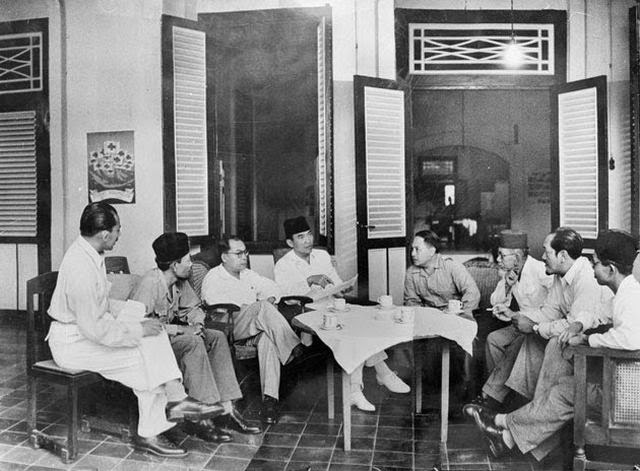
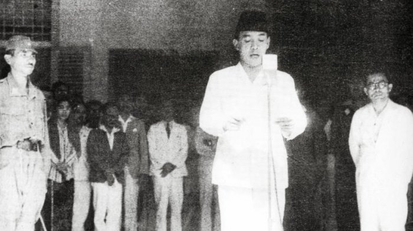

galeri



Terdengarnya kabar bahwa Jepang telah menyerah kepada sekutu membuat beberapa anggota golongan muda yaitu Sutan Sjahrir, Chaerul Saleh, Darwis, dan Wikana mendesak para golongan tua untuk segera melakukan memproklamasikan kemerdekaan. Namun tokoh utama golongan tua yaitu Soekarno dan Moh Hatta tidak setuju akan hal tersebut. Mereka menganggap bahwa pengambilan keputusan secara mendadak dalam proklamasi kemerdekaan akan menyebabkan pertumpahan darah antara kekuasaan Jepang yang belum sepenuhnya diambil alih oleh Indonesia. Perdebatan inilah yang menyebabkan terjadinya peristiwa Rengasdengklok. Mengingat pro dan kontra antara golongan muda dan golongan tua, sebuah keputusan pun akhirnya diambil.
Pada tanggal 15 Agustus 1945 para golongan muda membawa Soekarno dan Moh Hatta ke Rengasdengklok.Mereka bertujuan untuk mengamankan mereka dari pengaruh Jepang. Agar proklamasi kemerdekaan Indonesia dapat segera dilaksanakan.
Mungkin pada bagian inilah yang menjadi tonggak penting sejarah kemerdekaan Indonesia. Dengan adanya peristiwa Rengasdengklok, akhirnya Soekarno dan Moh. Hatta tergugah untuk segera memproklamasikan kemerdekaan. Dengan mengadakan rapat perumusan teks proklamasi di rumah Laksamana Maeda pada tanggal 16 Agustus 1945 lengkap dihadiri oleh beberapa anggota para golongan muda.
Sebagai Kepala Kantor Penghubung Angkatan Laut Jepang, rumah Laksamana Maeda dianggap menjadi tempat yang paling aman untuk melakukan perumusan teks proklamasi. Karena Laksamana Maeda merupakan teman baik dari Ahmad Soebardjo yang merupakan salah satu anggota golongan tua perumusan teks proklamasi kemerdekaan Indonesia.
Setelah rapat yang diselenggarakan oleh Soekarno, Moh Hatta, dan Ahmad Soebardjo, tersusunlah sebuah naskah teks proklamasi yang ditulis tangan oleh Soekarno. Dengan telah disetujui oleh para anggota golongan tua dan muda, dan mengalami beberapa perubahan, akhirnya Soekarno menandatangani teks tersebut dengan disaksikan oleh semua pihak yang menjadi saksi.
Pada tanggal inilah yang menjadi hari paling bersejarah bagi Bangsa Indonesia. Kemerdekaan Indonesia ditandai dengan pembacaan teks proklamasi oleh Soekarno pada tanggal 17 Agustus 1945. Dihadiri oleh para tokoh pergerakan kemerdekaan dan seluruh rakyat Indonesia yang ingin menyaksikan buah hasil dari perjuangan para pahlawan dan tokoh penting demi kemerdekaan Indonesia.
s Upacara pembacaan teks proklamasi tersebut berjalan dengan sangat lancar dengan bertempat di kediaman Soekarno di jalan Pegangsaan Timur Nomer 56. Beberapa acara telah disusun dalam hari kemerdekaan Indonesia, seperti pengibaran bendera Merah Putih, dan beberapa sambutan oleh walikota pada saat itu yaitu Suwiryo dan dr. Muwardi.
Hari itu menjadi hari terpenting dan menjadi sejarah kemerdekaan Indonesia yang paling dikenang oleh seluruh masyarakat Indonesia. Dengan tersiarnya kabar kemerdekaan Indonesia ke beberapa daerah hingga luar negeri, membuat Indonesia benar-benar sudah merdeka dan bebas dari belenggu para penjajah.